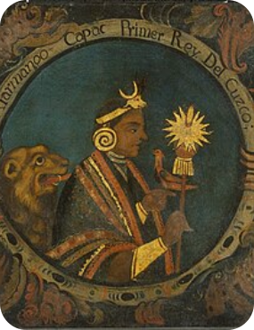
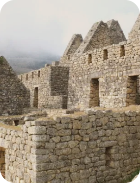
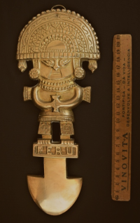
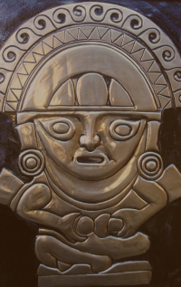
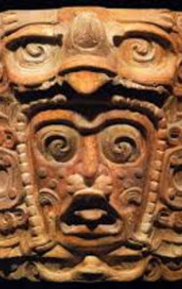
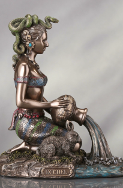
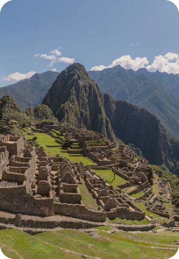

Povo Inca — América do Sul
Os Incas formaram uma das maiores civilizações da América pré-colombiana. Seu império surgiu na região de Cusco, no atual Peru, e se expandiu por partes do Equador, Bolívia, Chile e Argentina. O Império Inca atingiu seu auge entre 1438 e 1532 d.C., reunindo diferentes povos em um grande território.

História E Sociedade
O Império Inca era governado pelo Sapa Inca, considerado uma figura sagrada e descendente do deus Sol, Inti. A sociedade era hierarquizada, com nobres e autoridades no topo, enquanto agricultores, artesãos e soldados formavam grande parte da população. Uma importante forma de organização era o ayllu, grupo de famílias que trabalhava coletivamente. A agricultura era essencial para a sociedade, principalmente o cultivo de milho, batata e outros alimentos adaptados às diferentes regiões do império.
Religião e Cultura
Os Incas eram politeístas e acreditavam em vários deuses relacionados à natureza e ao universo. Inti era o deus do Sol, Mama Quilla representava a Lua, Pachamama estava ligada à terra e à fertilidade, e Viracocha era considerado o deus criador. Cerimônias e oferendas faziam parte da vida religiosa.
-

Inti
Sol
-

Mama Quilla
Lua
-

Pachamama
Terra e fertilidade
-

Viracocha
Criador e destruidor

Arquitetura
A arquitetura foi uma das maiores marcas da civilização Inca. Eles construíram templos, fortalezas, cidades e uma extensa rede de estradas. Suas construções utilizavam grandes pedras encaixadas com muita precisão, sem a necessidade de argamassa em algumas estruturas. O exemplo mais conhecido é Machu Picchu, uma antiga cidade construída nas montanhas do atual Peru. A construção demonstra o domínio dos Incas sobre arquitetura, engenharia e adaptação ao ambiente.
Curiosidades:
Os Incas utilizavam um sistema chamado ceque, formado por linhas que partiam de Cusco e conectavam diferentes locais considerados sagrados. Esse sistema estava relacionado à religião, à organização da sociedade e à observação do espaço.